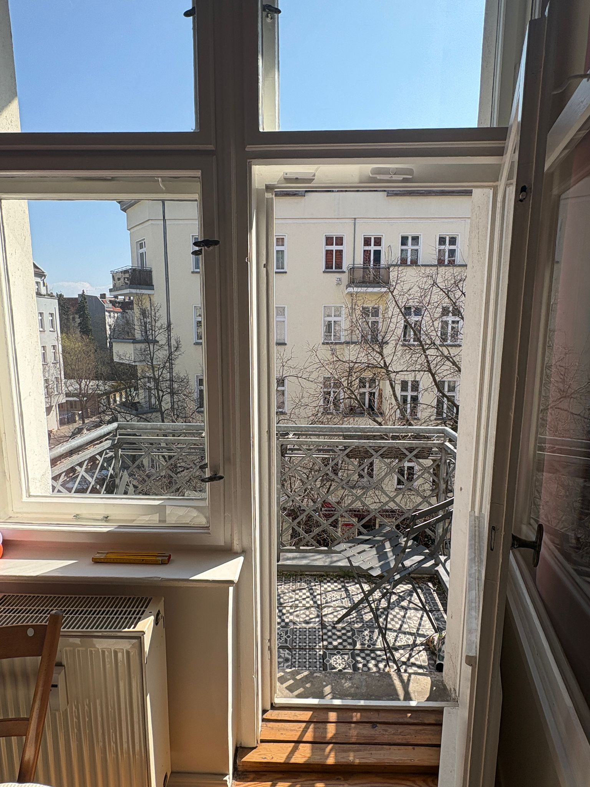
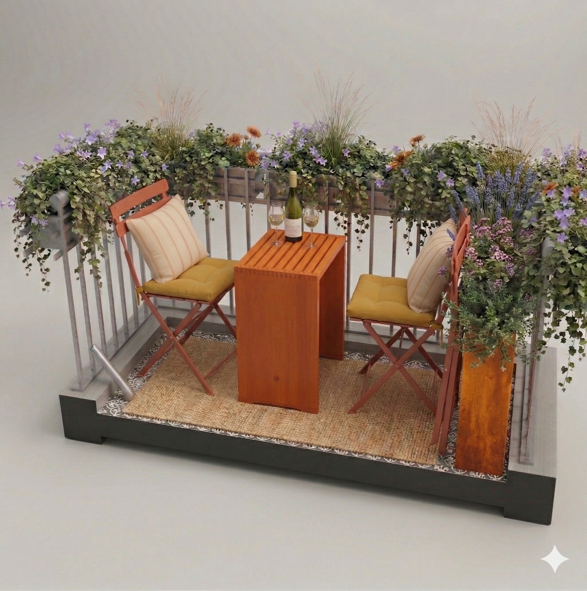
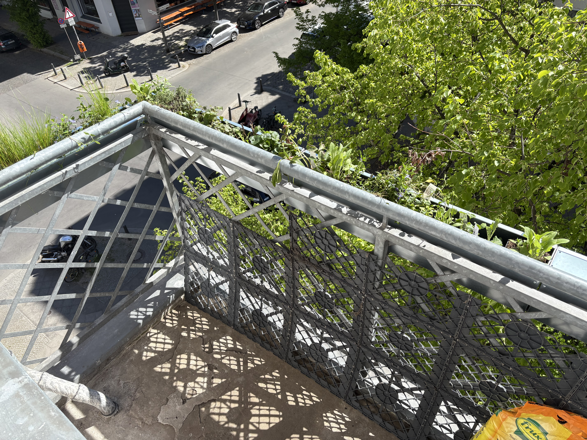

Die Balkon-Profis
Mach Deinen Balkon zum Lieblingsort
Schieß ein Foto Deines Balkons, nenn uns drei Maße und wir planen für Dich. Fertige Kästen, Kübel, Hochbeete. Und alles andere packen wir in Deine individuelle Design-Inspiration mit einer unabhängigen Kaufempfehlung. Auch Custom-Made möglich. Keine Fahrt zum Baumarkt nötig. Wir bringen es zu Dir ohne Verpackungsmüll und Dreck.
Beta-Test in Berlin für Freunde und Bekannte. Sucht Eure Produkte aus und wir planen und liefern kostenlos.
Dein Einrichtungskonzept in drei Schritten
Wir benötigen ein aussagekräftiges Foto und die Grundmaße - dann bekommst Du eine Planung mit ausführlicher Liste. Die Lieferung erfolgt nach Auftrag und Absprache.

Skizze, Animation, Einkaufsliste.

Alles an einem Tag geliefert.
Vorher & Nachher


Artikel zu Wissen, Ideen und wie wir arbeiten.
Hier findest du ausführliche Ratgeber zu Balkon gestalten und einrichten, zu pflegeleichten Kübelpflanzen und Aufbauten ohne unnötigen Aufwand, zu Outdoor-Möbeln für kleine Flächen und zu natürlichem Sichtschutz. Wir beschreiben dabei auch, wie wir bei BALKO planen, visualisieren und dich Schritt für Schritt durch den Ablauf begleiten. Der Schwerpunkt liegt auf Berlin und typischen Stadt-Balkonen, viele Inhalte kannst du aber genauso an anderen Orten nutzen.

Service · Interiordesign
Unser Designservice, Interiordesign für Balkone

Balkon gestalten · Inspiration
Lieblingsort Balkon — einrichten & gestalten

Natürlich · Ohne Bohren
Balkon-Sichtschutz ohne Bohren

Sitzmöbel · Outdoor
Balkonmöbel für kleine Balkone
Ratgeber · Haltbarkeit
Sichtschutz für Balkon: 12 Lösungen, die halten

Stadt · Lieblingsort
Balkon einrichten in Berlin

Deko · Ideen
Balkon Deko & stimmige Details
Möbel · Kleinraum
Balkon Stuhl — kompakt & wetterstabil
Geländer · Schutz